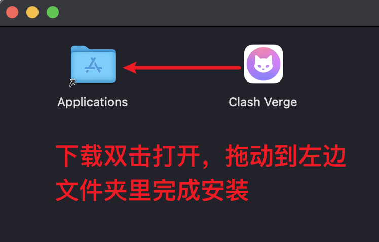

下载与安装
操作系统¶
Warning
- 如果你不清楚你的电脑系统架构，请下载
x64架构文件（目前多数 Windows 电脑使用该架构）。 - Windows 7 用户请先升级至Win10/11，或改为使用Linux桌面发行版，现版本已经不再支持Windows7。
- 带有
fix_webview2字样的安装包为内置Webview2环境版本（该文件体积比普通安装包大，仅用于当系统缺少且无法安装WebView2环境时使用，当你无法正常打开面板也可以试试这个版本）。
| 系统架构 | 下载地址 |
|---|---|
| x64 |
|
| arm64 |
|
Warning
这是社区维护的 Scoop 分发，我们不为下游渠道产生的问题提供支持。
Note
对于有「修改配置目录」/「便携版」需求的用户适用。
安装 Scoop:
# See https://github.com/ScoopInstaller/Install#readme
Set-ExecutionPolicy -ExecutionPolicy RemoteSigned -Scope CurrentUser
irm get.scoop.sh -outfile 'install.ps1'
.\install.ps1 -ScoopDir 'D:\Scoop' -ScoopGlobalDir 'D:\ScoopGlobal' # 仅作示例，可根据实际需求调整
安装 Clash Verge Rev:
| 系统架构 | 下载地址 |
|---|---|
| x64 |
|
| arm64 |
|
| armv7 |
|
下载上方deb包后，使用apt安装：
| 系统架构 | 下载地址 |
|---|---|
| x64 |
|
| arm64 |
|
| armv7 |
|
下载上方rpm包后，使用dnf/yum安装：
Warning
支持MacOS 12及以上系统。
对于MacOS 11用户，可以自行下载metacubex/mihomo内核(带有go124标签的版本)替换文件/applications/Clash\ Verge.app/Contents/MacOS/verge-mihomo来使用，不过还是建议更新系统以获得更好的支持。
| 系统架构 | 下载地址 |
|---|---|
| Intel 芯片 |
|
| Apple M 芯片 |
|

源代码编译安装¶
编译构建指南请转到构建。
请注意区分以下文件清单(以用户量比较多的Windows为例)
+--- resources #资源目录
+--- locales #语言包
\--- clash-verge-service.exe #服务模式主程序
\--- Country.mmdb
\--- enableLoopback.exe #解除UWP应用网络回环限制工具
\--- geoip.dat
\--- geosite.dat
\--- install-service.exe #服务模式安装程序
\--- sysproxy.exe #系统代理程序
\--- uninstall-service.exe #服务模式卸载程序
\--- clash-verge.exe #主程序
\--- verge-mihomo.exe #Mihomo核心程序
\--- verge-mihomo-alpha.exe #Mihomo Alpha 版本
安装问题¶
如果安装/使用过程中遇到了问题，请参考文档中的常见问题。
发布地址¶
Clash Verge Rev 目前仅通过 GitHub Release 发布，请注意辨别。
| 发行版本 | 下载次数 | 下载地址 | 备注 |
|---|---|---|---|
| Github Release 正式版 |  |
 |
|
| Github Release 测试版 |  |
|
隐私政策¶
Clash Verge Rev 不收集任何用户数据。安装前请阅读隐私政策，其中列出了应用会发起的全部网络连接，以及关闭默认联网行为的方式。